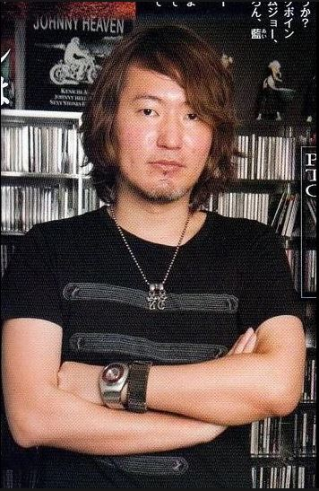

Bleach
La serie sigue las aventuras de Ichigo Kurosaki, un joven que obtiene accidentalmente los poderes de un shinigami, y su papel en la lucha contra los espíritus malignos conocidos como hollows y otros seres sobrenaturales.
Precio: €7.99
Bleach es un manga japonés escrito e ilustrado por Tite Kubo. Se serializó en la revista Weekly Shonen Jump de Shueisha desde agosto de 2001 hasta agosto de 2016, con los capítulos individuales recopilados y publicados en volúmenes de tankobon por la misma editorial.
Información del Autor
Tite Kubo es un mangaka japonés nacido el 26 de junio de 1977 en la prefectura de Hiroshima, Japón. Es más conocido por ser el creador de "Bleach", una de las series de manga y anime más populares y exitosas de la última década.
Kubo comenzó a dibujar y escribir "Bleach" en su adolescencia, y la serie rápidamente se convirtió en un éxito tanto en Japón como en el extranjero, ganando numerosos premios y acumulando una gran base de fans en todo el mundo.
En resumen, Tite Kubo es un mangaka talentoso cuyo trabajo en "Bleach" ha dejado una marca indeleble en la industria del manga y el anime. Su habilidad para crear mundos vibrantes y personajes memorables lo ha convertido en uno de los autores más reconocidos y respetados en el mundo del entretenimiento japonés.
Arcos Principales
| Arco | Descripción | Capítulos |
|---|---|---|
| Arco de la Sociedad de Almas: El Comienzo | Ichigo Kurosaki obtiene poderes de shinigami y se embarca en una misión para rescatar a Rukia Kuchiki en la Sociedad de Almas. | 1-20 |
| Arco de la Sociedad de Almas: La Invasión | Ichigo y sus amigos luchan contra los invasores enemigos en la Sociedad de Almas para salvar a Rukia y detener los planes de Aizen. | 21-63 |
| Arco de la Sociedad de Almas: La Resurrección | Ichigo y sus aliados se enfrentan a los espíritus malignos y a los conspiradores detrás de los eventos en la Sociedad de Almas. | 64-109 |
| Arco de los Bount | Ichigo y sus amigos se enfrentan a una nueva amenaza cuando un grupo de seres inmortales conocidos como los Bount ataca la ciudad de Karakura. | 110-150 |
| Arco del Hueco Mundo | Ichigo y sus aliados se aventuran en el mundo de los hollows para rescatar a Orihime Inoue de las garras de los Arrancar y su líder, Aizen. | 151-229 |
| Arco de la Guerra Sangrienta de los Mil Años | Ichigo se une a los shinigami en la batalla contra los Quincys y su líder, Yhwach, en una lucha por el destino del mundo de los vivos y los muertos. | 230-686 |